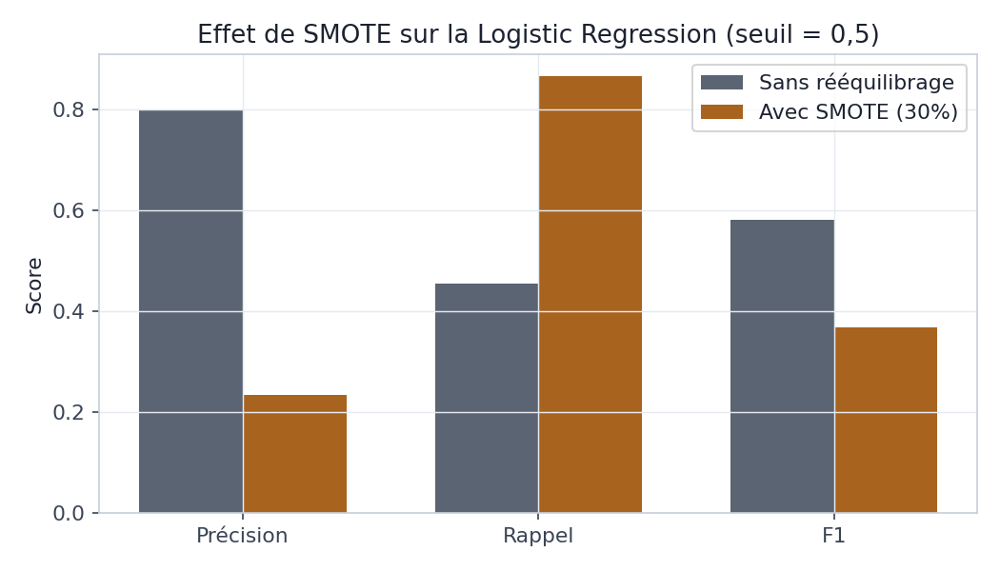
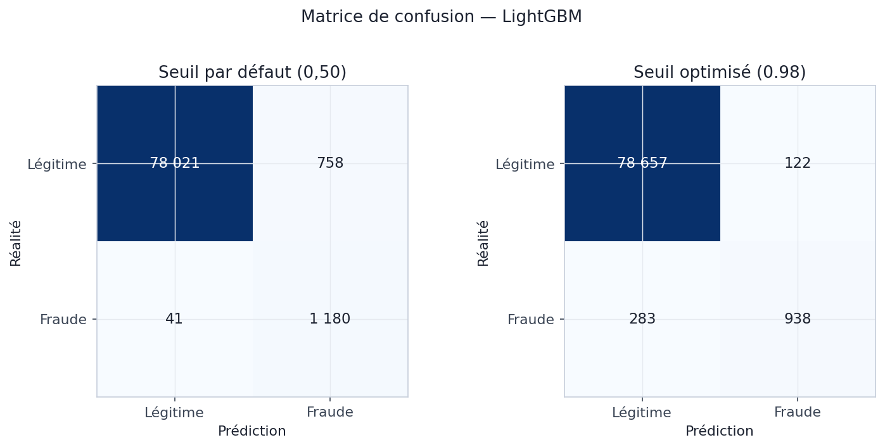
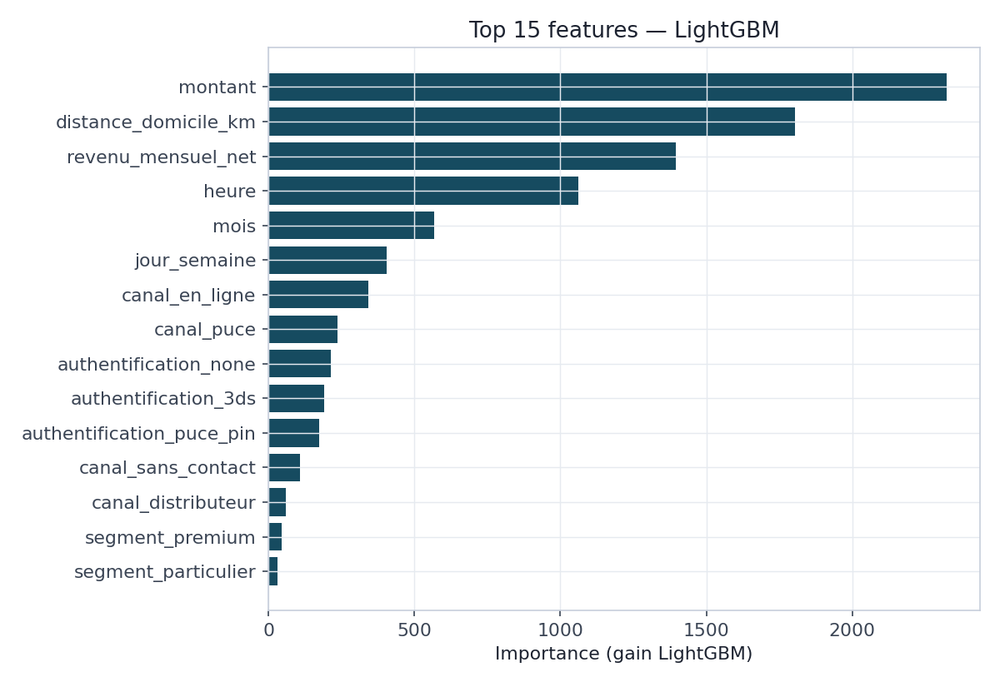
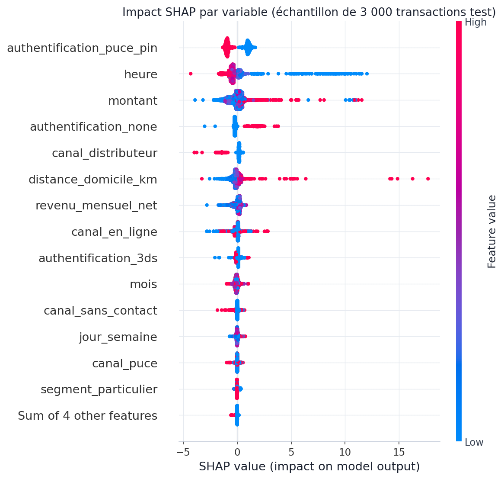
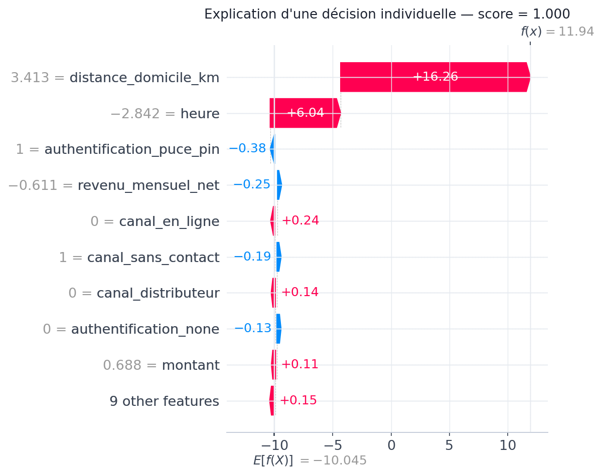

De la régression logistique de référence au Gradient Boosting : ce que trois configurations de modèle, évaluées sur un split temporel strict, révèlent sur le rééquilibrage des classes et le choix du seuil de décision.
Le BC02 a mesuré, chiffres à l'appui, la limite d'une détection fondée sur une seule variable à la fois : au mieux 30 % de rappel, parce que la fraude simulée porte six signatures différentes qu'aucune variable isolée ne peut toutes capturer. Le BC03 répond directement à cette limite en entraînant des modèles capables de combiner plusieurs variables simultanément. Il poursuit trois objectifs concrets : établir une référence simple et interprétable (Logistic Regression), mesurer l'effet réel d'une technique de rééquilibrage des classes (SMOTE) plutôt que de le supposer bénéfique par principe, puis évaluer un modèle non linéaire plus expressif (Gradient Boosting via LightGBM) et déterminer le seuil de décision qui exploite au mieux ses prédictions.
Le découpage entre données d'entraînement et données de test suit une logique temporelle, et non un tirage aléatoire : les 320 000 premières transactions chronologiques (jusqu'au 19 octobre 2025) servent à l'entraînement, les 80 000 suivantes à l'évaluation. Un tirage aléatoire classique aurait mélangé des transactions futures dans l'entraînement et des transactions passées dans le test, une forme de fuite d'information qui surestime systématiquement la performance mesurée par rapport à un déploiement réel, où le modèle ne voit jamais que le passé. Le taux de fraude reste stable entre les deux ensembles (1,49 % en train, 1,53 % en test), ce qui confirme que le split ne biaise pas la comparaison.
Une variable identifiée au BC02 est délibérément exclue du jeu de features :
pays_transaction (et son écart au pays de résidence). Ce couple s'est révélé être un
séparateur parfait — 100 % de fraude dès que le pays diffère —, mais ce résultat est un artefact
de la génération synthétique du BC01, pas un signal représentatif d'un cas réel. L'inclure
donnerait un modèle artificiellement parfait sur ces données précises, sans aucune valeur
démonstrative ni transférable. Cette exclusion est documentée ici précisément pour que le choix
soit traçable, et non pour dissimuler une variable gênante.
Deux métriques structurent la lecture des résultats en plus de l'AUC-ROC habituelle : le Gini (2×AUC − 1, une transformation directe de l'AUC-ROC, seuil de référence Bâle III à 0,65) et l'average precision (aire sous la courbe précision/rappel). Cette dernière est cruciale ici : sous un déséquilibre de 1,5 %, l'AUC-ROC reste presque saturée pour les trois modèles (0,983 à 0,998) et masque des écarts de performance réels — la section 4 le montre numériquement.
Les trois modèles partagent exactement le même jeu de variables (montant, distance au domicile, revenu mensuel, heure, jour de la semaine, mois, week-end, nuit, authentification, canal, segment) et le même prétraitement (mise à l'échelle des variables numériques, encodage one-hot des variables catégorielles), afin que seule la stratégie de modélisation diffère d'une configuration à l'autre.
| Configuration | Gestion du déséquilibre | Principe |
|---|---|---|
| Logistic Regression | Aucune | Référence linéaire, sans intervention sur les classes |
| Logistic Regression + SMOTE | SMOTE, 30 % de la classe majoritaire | Sur-échantillonnage synthétique de la fraude, train uniquement |
| LightGBM | scale_pos_weight ≈ 66 | Repondération native du gradient boosting, pas de SMOTE |
scale_pos_weight) agit directement
sur la fonction de perte à chaque itération de boosting, sans déformer la distribution des
données. SMOTE est réservé ici au modèle linéaire, pour lequel son effet est démontré en
section 5 — chaque technique est appliquée là où elle a un fondement, pas de façon uniforme.
Les trois courbes ROC se superposent presque parfaitement (AUC de 0,983 à 0,998) — un artefact classique du déséquilibre extrême, où le taux de faux positifs reste mécaniquement bas même pour un modèle médiocre, simplement parce que la classe négative est écrasante. La courbe précision/rappel raconte une tout autre histoire : LightGBM atteint une average precision de 0,921, contre 0,670 pour la régression logistique seule et seulement 0,605 avec SMOTE. C'est cet écart-là qui reflète la performance réellement exploitable en production.
| Modèle | AUC-ROC | Gini | Avg. Precision | Précision @0,5 | Rappel @0,5 | F1 @0,5 |
|---|---|---|---|---|---|---|
| Logistic Regression | 0,983 | 0,967 | 0,670 | 80,0 % | 45,5 % | 0,580 |
| Logistic Regression + SMOTE | 0,984 | 0,968 | 0,605 | 23,4 % | 86,6 % | 0,368 |
| LightGBM | 0,998 | 0,997 | 0,921 | 60,9 % | 96,6 % | 0,747 |
Appliqué à la régression logistique, SMOTE produit exactement l'effet attendu en théorie : le rappel bondit de 45,5 % à 86,6 % — le modèle détecte presque deux fois plus de fraudes. Mais ce gain a un coût sévère : la précision s'effondre de 80,0 % à 23,4 %, si bien que le F1, qui résume les deux, baisse au lieu d'augmenter (0,580 → 0,368). SMOTE n'est donc pas une amélioration inconditionnelle : il déplace la frontière de décision vers la classe minoritaire, ce qui profite au rappel mais peut dégrader la précision plus qu'il ne compense — exactement ce que montre ce résultat, plutôt que de l'affirmer sans preuve.

Un modèle de classification ne produit pas une décision binaire mais une probabilité ; le seuil au-delà duquel on la convertit en alerte est un choix distinct de l'entraînement du modèle. Au seuil par défaut de 0,50, LightGBM détecte 96,6 % des fraudes mais ne les concentre qu'à 60,9 % de précision — 758 fausses alertes pour 1 180 vraies fraudes détectées sur les 80 000 transactions de test. En balayant systématiquement les seuils de 0,01 à 0,99 et en retenant celui qui maximise le F1, le seuil optimal se situe à 0,98 : la précision grimpe à 88,5 %, au prix d'un rappel ramené à 76,8 % (938 fraudes détectées, 283 manquées, mais seulement 122 fausses alertes).


Le montant, la distance au domicile et le revenu mensuel net dominent le classement d'importance
de LightGBM, loin devant les variables catégorielles (canal, authentification, segment). Cette
hiérarchie doit être lue avec précaution : l'importance par gain de LightGBM favorise
structurellement les variables numériques continues, qui offrent davantage de points de coupure
possibles à chaque arbre, au détriment des variables encodées en one-hot, dont l'importance se
fragmente entre plusieurs colonnes binaires. Le canal en_ligne et l'absence
d'authentification, identifiés comme fortement discriminants au BC02 (taux de fraude de 2,43 %
et 5,56 % respectivement), apparaissent ainsi moins bien classés ici qu'une lecture univariée ne
le laisserait supposer — un écart méthodologique à garder en tête plutôt qu'une contradiction
entre les deux blocs.

L'importance par gain (section 7) répond à « quelles variables comptent », mais pas à « dans quel sens » ni « pourquoi cette transaction précise ». Les valeurs SHAP (SHapley Additive exPlanations) comblent les deux manques : elles décomposent chaque prédiction individuelle en une contribution signée par variable, dont la somme reconstitue exactement le score prédit. Agrégées sur un échantillon, elles redonnent une vue d'ensemble qui, cette fois, montre le sens de l'effet.

La lecture confirme et affine le profiling du BC02 : une heure faible (points bleus,
c'est-à-dire tôt le matin) pousse fortement le score vers la fraude, une authentification
none (points rouges) également, tandis qu'un canal_distributeur (points
rouges pour cette variable binaire) pousse au contraire vers la légitimité — cohérent avec son
taux de fraude le plus bas mesuré au BC02 (0,24 %). Le montant confirme sa
distribution bimodale : des valeurs à la fois très hautes et très basses (nuances de rouge et de
bleu aux deux extrémités du nuage) poussent vers la fraude, sa partie centrale reste neutre.
La transaction retenue pour cet exemple est la fraude détectée avec la plus forte confiance du jeu de test (score prédit ≈ 1,000) : un paiement de 131,61 € par carte sans contact, à minuit, validé par code PIN, mais à 175 km du domicile du client — soit 3,4 écarts-types au-dessus de la distance moyenne mesurée au BC02 (13,65 km). Le graphique ci-dessous exprime les contributions en échelle log-cote (avant transformation en probabilité par la fonction sigmoïde) : la distance au domicile contribue à elle seule pour +16,26, l'heure nocturne pour +6,04, tandis que l'authentification par code PIN atténue très légèrement le score (−0,38) sans suffire à compenser les deux premiers facteurs.

Cette transaction correspond très exactement à la signature vol_carte_physique
définie au BC01 : une carte techniquement valide (code PIN correct) mais utilisée dans des
conditions incompatibles avec le comportement habituel du client. C'est précisément le type
d'explication — nommée, quantifiée, opposable — qu'une équipe conformité ou un client peut exiger
en cas de blocage automatique de sa carte.
Quatre conclusions structurent la suite du projet. D'abord, un modèle non linéaire capable de
combiner les variables (LightGBM) apporte un gain net et mesuré par rapport à un modèle linéaire
— l'average precision passe de 0,670 à 0,921 —, validant l'hypothèse posée en synthèse du BC02
selon laquelle la fraude multi-signature exige une combinaison de variables plutôt qu'une règle
isolée. Ensuite, ni le rééquilibrage des classes ni le choix du modèle ne dispensent d'une
décision explicite sur le seuil : deux modèles avec un excellent AUC peuvent avoir des
comportements opérationnels radicalement différents selon où l'on place la frontière de
décision, et ce choix engage un arbitrage métier, pas seulement statistique. Par ailleurs, l'analyse
SHAP démontre que le modèle retenu est explicable décision par décision, pas seulement en
performance agrégée : cette capacité, adossée au modèle sauvegardé
(bc03_modeles_supervises/models/modele_lightgbm.joblib), sera directement
réutilisable par l'API de scoring du BC05 pour justifier chaque alerte en temps réel. Enfin, ce
modèle reste un modèle à base d'arbres sur des variables tabulaires classiques, où chaque
transaction est jugée indépendamment des autres : le BC04 explorera des approches complémentaires
— autoencodeur pour la détection d'anomalies sans label, réseau de neurones sur des séquences de
transactions — capables de capturer des dépendances temporelles qu'un modèle par transaction
indépendante, comme ceux de ce bloc, ne voit structurellement pas.